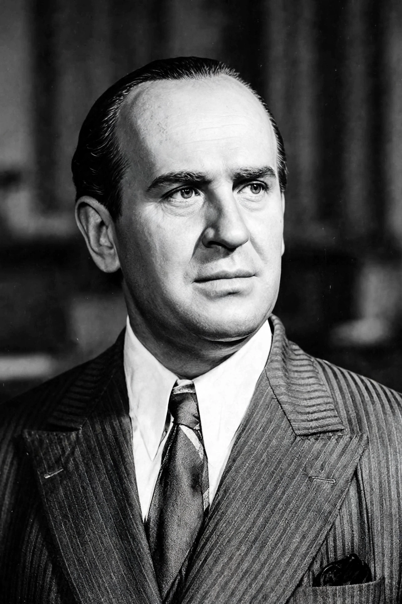

Oskar Schindler (28 April 1908 - 9 October 1974) was a German industrialist, humanitarian and member of the Nazi Party who is credited with saving the lives of 1,200 Jews during the Holocaust by employing them in his enamelware and ammunitions factories in German-occupied Poland and the Protectorate of Bohemia and Moravia. He is the subject of Thomas Keneally's 1982 novel Schindler's Ark and its 1993 film adaptation, Steven Spielberg's Schindler's List.

Schindler in the 1940s.
| Oskar Schindler | |
| Born | 28 April 1908, Zwittau, Moravia, Austria-Hungary |
|---|---|
| Died | 9 October 1974 (aged 66), Hildesheim, West Germany |
| Occupation | Industrialist |
| Known for | Saving 1,200 Jews during the Holocaust |
| Spouse | Emilie Schindler (m. 1928) |
| Honours | Righteous Among the Nations (1993, with Emilie) |
Schindler was born into a Sudeten German family in Zwittau, Moravia. After varied ventures he joined the Nazi Party and gathered intelligence for the Abwehr. Following the German invasion of Poland, he acquired an enamelware factory in Krakow (Deutsche Emailwarenfabrik, "Emalia") and profited initially from the war economy and cheap Jewish labour from the Krakow ghetto. Initially motivated by profit, he increasingly used his wealth - on bribes and black-market goods for his workers - to protect them, abetted by his accountant Itzhak Stern and his wife Emilie.
When the Krakow ghetto was liquidated in March 1943 and the Plaszow camp's brutality deepened under Amon Goth, Schindler resolved to save his workforce. In late 1944, as the Red Army advanced, he obtained permission to relocate his factory to Brunnlitz in the Sudetenland, and the famous lists of workers - some 1,200 people - were drawn up so they would be transferred rather than sent to Auschwitz. Almost all survived the war.
After the war Schindler emigrated to Argentina, failed in business, and returned to Germany, living partly on support from the Jews he had saved (the Schindlerjuden) and their organisations. He died in Hildesheim in 1974 and was buried in Jerusalem on Mount Zion - the only former Nazi Party member so honoured. In 1993 Yad Vashem recognised Oskar and Emilie Schindler as Righteous Among the Nations.